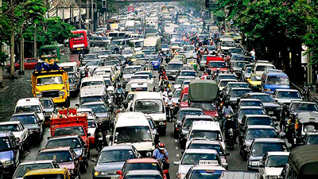
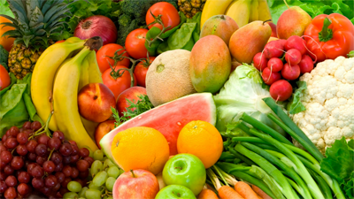

How to save the world
Hello, world!
This is a page on how to save you.
Sorry, buttons are under construction so far. Fix them to become
a super hero.


INSTRUCTIONS: From Daily Mail Online:
- Believe you can make a difference - if just 1% of our 6 million readers follow our tips below, the changes would be significant. Letters and emails go a long way too. Armchair campaigners can contact Friends of the Earth (FoE)'s Campaign Express (tel: 020 7490 1555; www.foe.co.uk) or Greenpeace (tel: 020 7865 8100; www.greenpeace.org.uk).
- Change electricity supplier to Unit[e], the only UK company that provides 100% renewable energy to the domestic market. For more info from Unit[e], tel: 0845 601 1410; www.unit-e.co.uk.
- Buy local food or soon there won't be any. Support local grocers, butchers and bakers above supermarkets, but best of all frequent farmers' markets as produce is fresher and purer and wasteful packaging is minimised. Call the National Association of Farmers' Markets to find your nearest (tel: 01225 787914; www.farmersmarkets.net: Visit the brilliant www.bigbarn.co.uk to find local small producers. Support FoE's Real Food, Local Food campaign: www.foe.co.uk; tel: 020 7490 1555).
- Walk, cycle or use public transport - if you must drive make your next car a green one. Until fuel cell vehicles hit the market, dual fuel hybrids (electricity and petrol) are the answer. The £17,000 Honda Insight gives 60-80 miles to the gallon and emits over 50% fewer hydrocarbons and nitrous oxide than a conventional equivalent. Info: 0845 200 8000; www.honda.co.uk. The government is offering a £1,000 grant for the first 200 buyers.
- Convert your car to LPG, liquid petroleum gas (or 'autogas'), and benefit from another government grant of 75% of the conversion cost. LPG is half the price of petrol and toxic emissions are significantly reduced. More info from LPG Association (tel: 01425 461612, www.lpga.co.uk, click on Autogas). Further details about grants from the Energy Saving Trust 0845 602 1425, www.est-powershift.org.uk.
Excited to do more? Go to this site and do your best!